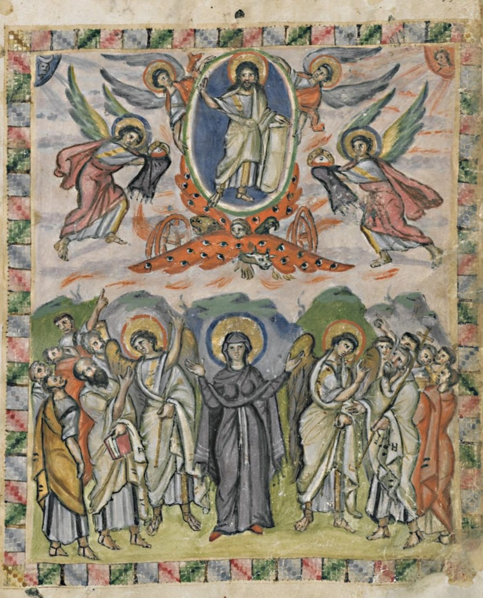

Rabbula Gospels (586 CE), Folio 13v: Christ in majesty with the gathered disciples.
Quick Summary
Welcome to Syriac, the dialect of Aramaic that became a major literary language of Middle Eastern Christianity from the 2nd century through the Middle Ages. Before diving into verbs or complex syntax, we must lay the foundation of the language: nouns, pronouns, and how to string them together to make a sentence.
5-Question Baseline Drill
(Since this is Lesson 1, these questions reflect general Semitic language principles to prime your existing knowledge. Answers are in Section 9).
One of the most striking differences between Indo-European languages (Greek, Latin, English) and Semitic ones (Hebrew, Arabic, Syriac) is syntax and the copula (“to be”).
In English, we say “God is good.” In Greek, “ὁ θεὸς ἀγαθός ἐστιν.” We require a verb to link the subject to its predicate. In Syriac, as in Hebrew and Arabic, the “is” functions implicitly. You simply place two nouns, or a noun and an adjective, next to one another.
ʾAlāhā ṭāb = God [is] good.
Cross-Linguistic Comparison: The Definite Article
Another major shift is how Syriac handles “the”.
1. Independent Personal Pronouns
Pronouns stand alone as the subject of a sentence. They distinguish gender in the 2nd and 3rd persons (unlike English “you” or “they”).
2. The Prefixed Particles d-, l-,
b- and w-
Syriac relies heavily on one-letter particles that attach directly to the front of the next word.
d- (ܕ): This
acts like the English “of”, “which”, “who”, or “that”. It defines
relationships and possession.
l- (ܠ): This means
“to” or “for”, but it is also used heavily as a Direct Object marker
(similar to the Hebrew et אֵת, though functioning
prepositionally).
b- (ܒ): “in”, “on”,
“at”, “with”, “by”.
w- (ܘ): “and”.
Here are the independent personal pronouns in Syriac. Observe the similarities to other Semitic languages.
| Person | Estrangela | Transliteration | Translation | Arabic Cognate | Hebrew Cognate |
|---|---|---|---|---|---|
| 1 c.sg. | ܐܢܐ | ʾenā | I | ʾanā (أنا) | ʾănī (אֲנִי) |
| 2 m.sg. | ܐܢܬ | ʾant | You (m) | ʾanta (أنتَ) | ʾattāh (אַתָּה) |
| 2 f.sg. | ܐܢܬܝ | ʾant(y) | You (f) | ʾanti (أنتِ) | ʾatt (אַתְּ) |
| 3 m.sg. | ܗܘ | hū | He / It | huwa (هو) | hūʾ (הוּא) |
| 3 f.sg. | ܗܝ | hī | She / It | hiya (هي) | hīʾ (הִיא) |
| 1 c.pl. | ܚܢܢ | ḥnan | We | naḥnu (نحن) | ʾănaḥnū (אֲנַחְנוּ) |
| 2 m.pl. | ܐܢܬܘܢ | ʾantūn | You (m.pl) | ʾantum (أنتم) | ʾattem (אַתֶּם) |
| 2 f.pl. | ܐܢܬܝܢ | ʾantēn | You (f.pl) | ʾantunna (أنتنّ) | ʾatten (אַתֶּן) |
| 3 m.pl. | ܗܢܘܢ | hennōn | They (m) | hum (هم) | hēm (הֵם) |
| 3 f.pl. | ܗܢܝܢ | hennēn | They (f) | hunna (هنّ) | hēn (הֵן) |
Note: In ʾant, ʾant(y), ʾantūn, and ʾantēn, the ‘n’ is historically written but silent in pronunciation (assimilated: “at”, “at”, “atūn”, “atēn”). The final Yodh of ܐܢܬܝ is also written but silent. Throughout this course a letter that is written but not pronounced is put in parentheses in the transliteration: ʾant(y), malk(y), ktab(w).
For masculine singular nouns, the absolute state (“a king”) and the construct state (“king of…”) are identical in form: ܡܠܟ (melek). In the emphatic state (the standard dictionary form), an Alaph (-ā) is added to the stem (malk-): ܡܠܟܐ (malkā). For feminine abstract nouns ending in -ūtā, the absolute state ends in -ū (malkū) and the construct state ends in -ūt (malkūt).
| Gender | Absolute State | Construct State | Emphatic State (Default) | Transliteration |
|---|---|---|---|---|
| Masc. | ܡܠܟ (melek) | ܡܠܟ (melek) | ܡܠܟܐ | malkā (King) |
| Fem. | ܡܠܟܘ (malkū) | ܡܠܟܘܬ (malkūt) | ܡܠܟܘܬܐ | malkūtā (Kingdom) |
Rule of Thumb: If a noun ends in -ā (Alaph), it is overwhelmingly likely to be a masculine or feminine emphatic singular (or a feminine singular absolute adjective/noun such as mellā ‘word’, rabbā ‘great [f.abs.]’).
Plurals and the Plural Dots (syāmē)
The emphatic plural of most masculine nouns ends in -ē, and that of feminine nouns in -ātā. Because the masculine plural ending is written with the same Alaph as the singular, the two would look identical; Syriac therefore marks every plural with two dots, the syāmē, placed above one of the letters (on a Rish they replace its own dot).
| Singular | Plural (emphatic) | Plural (absolute) | |
|---|---|---|---|
| Masc. | ܡܠܟܐ malkā (king) | ܡ̈ܠܟܐ malkē (kings) | ܡ̈ܠܟܝܢ malkīn |
| Fem. | ܡܠܟܬܐ malktā (queen) | ܡ̈ܠܟܬܐ malkātā (queens) | ܡ̈ܠܟܢ malkān |
A few common nouns exist only in the plural: ܚ̈ܝܐ ḥayyē “life”, ܡ̈ܝܐ mayyā “water”.
Adjectives: Attributive and Predicate
An adjective follows its noun and agrees with it in gender and number. Its state depends on its job in the sentence:
| Adjective | m.sg. absolute (predicate) | m.sg. emphatic (attributive) | f.sg. absolute (predicate) | f.sg. emphatic (attributive) |
|---|---|---|---|---|
| good | ܛܒ ṭāb | ܛܒܐ ṭābā | ܛܒܐ ṭābā | ܛܒܬܐ ṭābtā |
| evil | ܒܝܫ bīš | ܒܝܫܐ bīšā | ܒܝܫܐ bīšā | ܒܝܫܬܐ bīštā |
| great | ܪܒ rab | ܪܒܐ rabbā | ܪܒܐ rabbā | ܪܒܬܐ rabbtā |
Notice that the feminine absolute and the masculine emphatic are spelled and pronounced alike (ṭābā); the noun tells you which one you are reading. An emphatic adjective can also stand alone as a noun: bīšā “the evil one”, rabbā “the great one, chief”.
The following core nouns feature prominently in classical Syriac literature and the Peshitta (the Syriac Bible).
| Estrangela | Translit | Gender | Meaning | Etymology / Notes |
|---|---|---|---|---|
| ܐܠܗܐ | ʾAlāhā | m. | God | Cognate w/ Arabic Allāh, Heb ʾĔlōhīm |
| ܒܪܢܫܐ | barnāšā | m. | Human, son of man | Compounded from bar (son) + nāšā (man). Standard term for human. |
| ܡܠܟܐ | malkā | m. | King | Semitic root m-l-k |
| ܡܠܟܘܬܐ | malkūtā | f. | Kingdom | Abstract noun ending -ūtā |
| ܡܠܬܐ | meltā | f. | Word, Logos | The Syriac translation of Greek Logos (John 1:1) |
| ܢܘܗܪܐ | nūhrā | m. | Light | Root n-h-r. Cf. Arabic nūr |
| ܐܪܥܐ | ʾarʿā | f. | Earth, land | Cognate with Hebrew ʾereṣ, Arabic ʾarḍ |
| ܛܒܐ | ṭābā | adj. | Good | Absolute (predicate) form ܛܒ ṭāb. Heb ṭōb |
| ܒܝܫܐ | bīšā | adj. | Evil, bad | Absolute (predicate) form ܒܝܫ bīš. As a noun: “the evil one”. |
| ܝܘܚܢܢ | Yūḥannan | m. | John | Proper Name. |
| ܪܒܐ | rabbā | adj. | Great, large | Absolute (predicate) form ܪܒ rab. Root r-b-b. Cf. “Rabbi” (my great one). |
| ܚ̈ܝܐ | ḥayyē | m.pl. | Life | Root ḥ-y-y. Plural form (like Heb ḥayyīm) |
The Setting
Narrative note: This introductory passage is written entirely in
verbless sentences, establishing the setting and main characters using
classical equational syntax, pronouns, and the relational
d- particle.
Sentence 1
ܡܠܟܐ ܗܘ malkā hū. malkā (a-king) hū (he-[is]). → He is a king.
Sentence 2
ܘܡܠܟܘܬܐ ܕܡܠܟܐ ܪܒܐ ܗܝ w-malkūtā d-malkā rabbā hī. w- (and-) malkūtā (the-kingdom) d- (of) malkā (the-king) rabbā (great) hī (she-[is]). → And the kingdom of the king is great. (Note: ‘malkūtā’ is feminine, so the feminine absolute predicate adjective ‘rabbā’ and the pronoun ‘hī’ are used).
Sentence 3
ܒܪܢܫܐ ܒܝܫ ܗܘ barnāšā bīš hū. barnāšā (the-man) bīš (evil) hū (he-[is]). → The man is evil.
Sentence 4
ܝܘܚܢܢ ܛܒ ܗܘ Yūḥannan ṭāb hū. Yūḥannan (John) ṭāb (good) hū (he-[is]). → Yukhannan is good.
Sentence 5
ܐܠܗܐ ܠܝܘܚܢܢ ܢܘܗܪܐ ܗܘ ʾAlāhā l-Yūḥannan nūhrā hū. ʾAlāhā (God) l- (to/for) Yūḥannan (John) nūhrā (light) hū (he-[is]). → God is light to Yukhannan.
Sentence 6
ܡܠܬܐ ܕܐܠܗܐ ܒܐܪܥܐ ܗܝ meltā d-ʾAlāhā b-ʾarʿā hī. meltā (the-word) d- (of) ʾAlāhā (God) b- (in) ʾarʿā (the-earth) hī (she-[is]). → The word of God is in the land.
Sentence 7
ܡܠܟܐ ܒܐܪܥܐ ܘܝܘܚܢܢ ܠܡܠܟܐ ܢܘܗܪܐ ܗܘ malkā b-ʾarʿā, w-Yūḥannan l-malkā nūhrā hū. malkā (the-king) b- (in) ʾarʿā (the-earth), w- (and) Yūḥannan (John) l- (to) malkā (the-king) nūhrā (light) hū (he-[is]). → The king is in the land, and Yukhannan is a light to the king.
Exercise 1: Pronoun Identification
Identify the person, gender, and number of the following pronouns, and give the English translation.
Exercise 2: Morphology (Nouns)
Identify whether the following words are taking the Emphatic State suffix (-ā).
Exercise 3: Translation Drill (Syriac → English)
Translate the following basic verbless clauses into English.
Exercise 4: Production Drill (English → Syriac)
Render the following English sentences into Syriac transliteration using verbless clauses. (Remember to include the correct 3rd person pronoun at the end to act as “is”).
Exercise 5: Reading Comprehension
Re-read the story in Section 7 and answer the following:
Section 1 Warm-Up
Exercise 1: Pronoun Identification
Exercise 2: Morphology
ā).ā).Exercise 3: Translation
Exercise 4: Production
Exercise 5: Comprehension
THE VERBLESS CLAUSE — FORMATION RULES
| Component 1 | Component 2 | Copula (Pronoun) | Translation |
|---|---|---|---|
| Subject Noun | Predicate Noun / Adjective (absolute) | Pronoun matching Subject | |
| ʾAlāhā (God) | ṭāb (good) | hū (he) | God is good. |
| Meltā (Word) | rabbā (great) | hī (she) | The word is great. |
PRONOUN REFERENCE TABLE
| Person | Singular | Plural |
|---|---|---|
| 1st Common | ʾenā (I) | ḥnan (We) |
| 2nd Masc | ʾant (You) | ʾantūn (You all) |
| 2nd Fem | ʾant(y) (You) | ʾantēn (You all) |
| 3rd Masc | hū (He) | hennōn (They) |
| 3rd Fem | hī (She) | hennēn (They) |
The following 30 common nouns supplement this lesson’s core vocabulary.
| Syriac (Estrangela) | Transliteration | Part of Speech | Meaning | Notes |
|---|---|---|---|---|
| ܩܪܝܬܐ | qrītā | f. noun | village | emphatic state |
| ܠܫܢܐ | leššānā | m. noun | tongue, language | |
| ܓܪܡܐ | garmā | m. noun | bone | |
| ܟܐܦܐ | kēpā | f. noun | stone, rock | |
| ܡ̈ܝܐ | mayyā | m. noun (pl.) | water | plural in form |
| ܢܘܢܐ | nūnā | m. noun | fish | |
| ܡܕܝܢܬܐ | mdīttā | f. noun | city | |
| ܫܡܫܐ | šemšā | m. noun | sun | |
| ܬܪܥܐ | tarʿā | m. noun | door, gate | |
| ܡܫܚܐ | mešḥā | m. noun | oil | |
| ܚܝܠܐ | ḥaylā | m. noun | power, army | |
| ܐܕܢܐ | ʾednā | f. noun | ear | |
| ܩܝܣܐ | qaysā | m. noun | wood, tree | |
| ܢܗܪܐ | nahrā | m. noun | river | |
| ܣܒܪܐ | sabrā | m. noun | hope | |
| ܕܚܠܬܐ | deḥltā | f. noun | fear, religion | abstract noun |
| ܣܗܪܐ | sahrā | m. noun | moon | |
| ܪܓܠܐ | reglā | f. noun | foot | |
| ܫܠܡܐ | šlāmā | m. noun | peace | common greeting |
| ܐܬܪܐ | ʾatrā | m. noun | place, country | |
| ܣܗܕܐ | sāhdā | m. noun | witness, martyr | |
| ܒܣܪܐ | besrā | m. noun | flesh | |
| ܛܝܒܘܬܐ | ṭaybūtā | f. noun | grace | |
| ܬܘܪܐ | tawrā | m. noun | bull, ox | |
| ܩܝܡܐ | qyāmā | m. noun | covenant | |
| ܐܘܪܚܐ | ʾūrḥā | f. noun | way, road | |
| ܗܝܟܠܐ | hayklā | m. noun | temple, palace | |
| ܥܝܢܐ | ʿaynā | f. noun | eye | |
| ܦܘܡܐ | pūmā | m. noun | mouth | |
| ܕܝܢܐ | dīnā | m. noun | judgment |